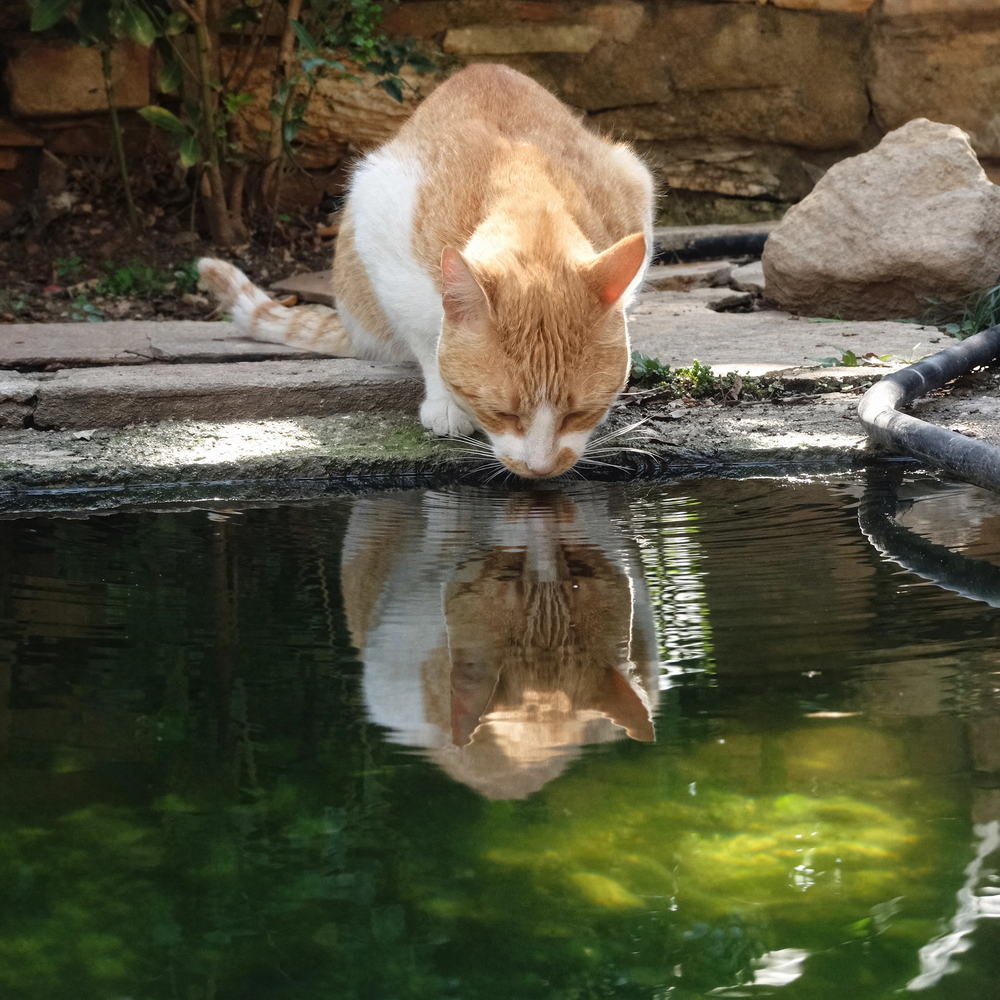
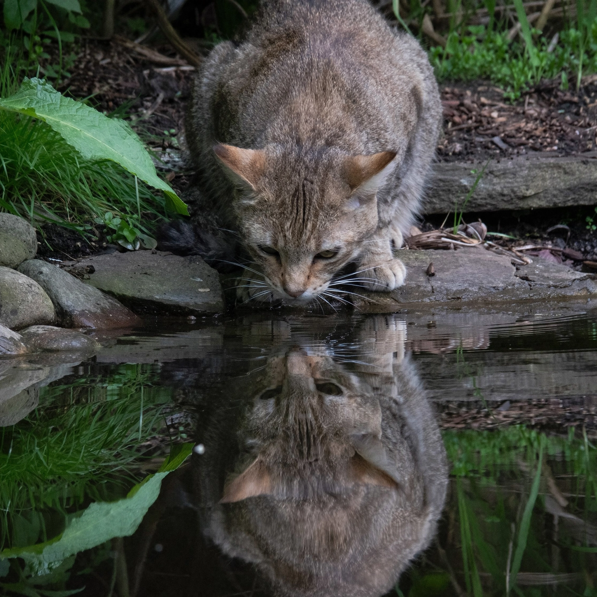

0
a cat seeing its reflection in a pond
Questions
Assistant
A
B
C
D
E
F
G
H
H
accuracy: 2
quality: 1
natural: 7
overall-rating: 1
1
Scorecard for H
Please fill out this form
D
accuracy: 2
quality: 2
natural: 5
overall-rating: 2
1
Scorecard for D
Please fill out this form
C
accuracy: 1
quality: 4
natural: 4
overall-rating: 3
1
Scorecard for C
Please fill out this form
G
accuracy: 3
quality: 3
natural: 6
overall-rating: 3
1

Scorecard for G
Please fill out this form
E
accuracy: 4
quality: 4
natural: 3
overall-rating: 4
1

Scorecard for E
Please fill out this form
A
accuracy: 6
quality: 5
natural: 4
overall-rating: 5
1
Scorecard for A
Please fill out this form
F
accuracy: 5
quality: 6
natural: 2
overall-rating: 6
1
Scorecard for F
Please fill out this form
B
accuracy: 7
quality: 7
natural: 1
overall-rating: 7
1
Scorecard for B
Please fill out this form
You have reached the maximum number of messages in this conversation.